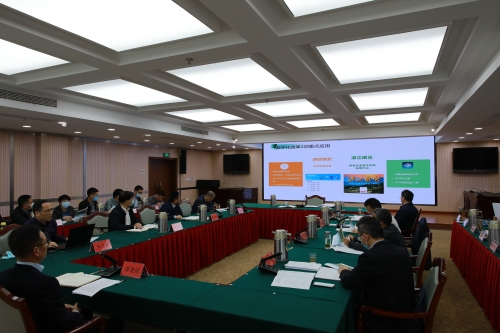
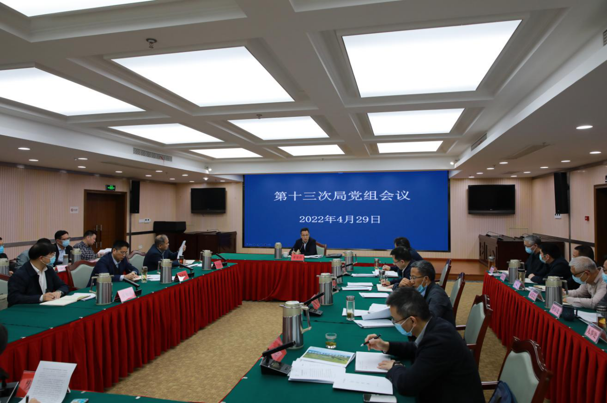

省粮食物资局党组召开会议专题研究数字化改革推进工作

4月29日下午，省粮食物资局党组召开会议，专题研究全省粮食物资系统数字化改革推进工作。
会议传达学习了习近平总书记在中央深改委第25次会议上的重要讲话精神和全省数字化改革推进会精神，对下一阶段粮食物资领域数字化改革工作作了动员部署。
局党组书记潘建漳主持会议。
会上，局数字化改革工作专班围绕浙政粮安多跨场景协同应用（粮食安全在线）、“浙江粮仓”数字化平台项目（粮食安全数字化协同应用平台）等两项重点应用，汇报了数字化改革工作推进情况。
会议指出，自局数字化改革工作启动以来，在局党组统一领导下，由局分管领导牵头，专班成员攻坚克难、齐心协力，取得的工作成效值得充分肯定。同时，也要直面问题，正视差距。
>会议强调，数字化改革是全面深化改革的总抓手，是塑造变革的核心载体和量化闭环的核心工具，是高质量发展建设共同富裕示范区的核心动力，是提升干部适应引领现代化能力的必答题。全局上下要提高对“以数字化改革助力政府职能转变”重要论断的认识，统一思想、凝聚共识，团结协作、形成合力，精准发力、持续推进， 进一步唱响唱亮“三步曲”：一是要高质量做好桐乡试点工作，为全省部署推广打好基础；二是要加快推进基础部署和推广使用，打通“最后一公里”，争取尽早贯通使用；三是要早日形成浙江粮食物资系统数字化改革标志性成果，聚焦“米袋子稳产保供”等重大需求问题，全力以赴、乘势而上，借智借力、加速加力，确保改革成果经得起检验，更好助力高质量发展建设共同富裕示范区。
会议还传达学习了国务院第五次廉政工作会议和省政府第五次廉政工作会议、省委常委会第211次会议和省政府第97次常务会议、省政府第十次全体会议、省农业“双强”行动工作专班第一次例会等会议精神，审议了有关事项，并对“五一”节假日期间加强疫情防控、正风肃纪、应急保供、安全生产等工作作了具体部署。